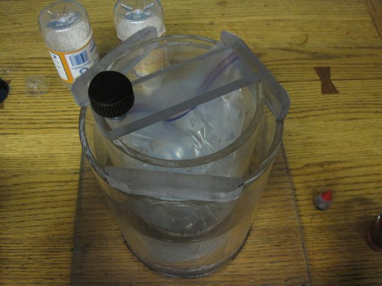

I built two things for East Campus rush this year. A tensegrity structure and a reversible laminar flow demo.
The tensegrity is made from 2x4 compression members and winch strap tension elements. When fully tensioned, it remains flexible due to compliance in the straps, but it is still very structural. Three people can sit comfortably at the top.
The reversible laminar flow demo uses fluorescent ink and UV light to create a visually impressive effect.